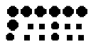
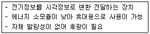
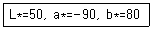
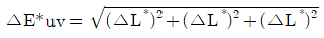

1과목: 색채심리
1. 계시 대비에 대한 설명 중 맞는 것은?
2. 색채의 감정 효과에 대한 설명으로 틀린 것은?
3. 올림픽의 오륜마크에 사용된 상징색이 아닌 것은?
4. TV 리모트 컨트롤러의 효과적인 색채 계획시 가장 고려해야 할 것은?
5. 비슷한 구조의 부엌 디자인을 차별화시킬 수 있는 좋은 방안이 아닌 것은?
6. 색채와 다른 감각간의 교류현상 중 틀린 것은?
7. 다음 색채 선호에 대한 설명 중 가장 적합하지 않은 것은?
8. 다음 색자극에 대한 설명중 생물학적 반응과 가장 거리가 먼 것은?
9. 다음 중 패션색채의 배색계획에서 톤 온 톤(Tone on tone) 배색으로 가장 올바른 것은?
10. 비렌의 색채 삼각형에 색채의 미적효과를 나타내는 최저 7개의 용어에 포함되지 않는 것은?
11. 무채색과 유채색의 동시대비에 있어서 대비현상이 일어나지 않는 것은?
12. 다음 지역색(local color)에 관한 설명 중 가장 거리가 먼 것은?
13. 색채조사를 위한 표본 추출 방법으로 적합하지 않은 것은?
14. 동시대비에 관한 설명이 잘못된 것은?
15. 파버비렌의 이론에서 녹색에 해당하지 않는 것은?
16. 휴식을 요하는 환자나 만성환자와 같이 장기간 입원해야 하는 환자병실에 적합한 색은?
17. 색채를 국제 언어적 측면에서 사용한 것이 아닌것은?
18. 유사색상 배색의 특징은?
19. 배색에 있어 주조색의 의미를 적절치 않게 설명한 것은?
20. 착시에 대한 설명 중 틀린 것은?
2과목: 색채디자인
21. 디자인이 귀족의 전유물에서 대중화, 대량 생산화로 전환되는 시기는?
22. 다른 그림의 디자인 원리는?

23. 실내 디자인(Interior Design)에 대한 설명 중 올바른 것은?
24. 사진, 기록, 녹음, 대화 등을 통해 색채를 분석하는 시장조사 기법은?
25. 1935년 미국에서 공기역학적 운송수단에 대한 탐색으로 시작된 형태로 주방용품이나 가정용품에까지도 나타났던 이 형태는?
26. 디자인의 원리들로 짝지어진 것은?
27. 다음 중에서 환경친화적 디자인으로서, 그린디자인 (Green Design)의 기본 원리라고 볼 수 없는 것은?
28. 밝은 베이지 + 어두운 브라운, 밝은 물색 + 감청색 등의 배색 예와 같이 동일 색상으로 톤의 차이가 나도록 하는 배색은?
29. 백화점의 출구에서 20대를 대상으로 하는 새로운 화장품 개발을 위한 조사를 하려고 한다. 가장 적합한 표본집단 선정법은?
30. 다음 중 디자인의 어원이 아닌 것은?
31. 모든 조형예술의 '최초의 요소로 위치만 있는 조형' 요소는?
32. 실내 공간의 색채계획으로 옳지 않은 것은?
33. 아르 누보 양식에서 선호한 색채는?
34. 배색방법에 대한 설명 중 거리가 먼 설명은?
35. 모델링의 종류 중 외형상으로 실제 제품에 가깝도록 도면에 따라 모형으로 만드는 것은?
36. 색채연구가들이 21세기의 대표적 색채를 청색으로 꼽았다. 청색은 투명하고, 깊이가 있는 디지털 패러다임의 대표색이 되었다. 이것은 색채마케팅 전략의 영향 요인 중 어느 요인에 해당되는가?
37. 색채마케팅에 있어서 제품의 위치(Positioning)에 대한 설명으로 올바른 것은?
38. 인간과 자연을 잇는 유기적 디자인 분야는 무엇인가?
39. 디자인에서 대상을 연속적으로 전개시켜 이미지를 만드는 요소는?
40. 다음은 샤넬라인(Chanel Line)에 대한 설명이다. 틀린 것은?
3과목: 섹채관리
41. 다음 중 육안조색과 관계가 없는 것은?
42. 염료의 종류 중 분말 상태로 찬물이나 더운물에 간단하게 용해되고 혼색이 자유로워 손쉽게 사용할 수 있는 장점이 있으면 세탁이나 햇빛에 약한 단점이 있는 염료는?
43. 다음은 흑체에 대한 설명이다. 틀린 것은?
44. 다른 물질과 흡착 또는 결합하기 쉬워 방직(紡織) 계통에 많이 사용되며 그 외 피혁, 잉크, 종이, 목재 및 식품 등의 염색에 사용되는 색소는?
45. 색채 오차의 시각적인 영향 요소와 가장 거리가 먼 것은?
46. 착색력이 우수하고 색상이 선명하며 인쇄잉크, 도료, 섬유수지날염, 플라스틱 착색 등에 이용되는 것은?
47. 측색에 관한 설명이 틀린 것은?
48. 조색 후 기준색과 시료색상과의 색상 비교를 틀리게 한 것은?
49. 그라비어 윤전인쇄의 특징이 아닌 것은?
50. 조색에 대한 설명으로 옳지 않은 것은?
51. 물체의 색을 측정하는 방법 중 0/d에 관한 설명이다. 맞는 것은?
52. 다음 설명 중 틀린 것은?
53. 다음의 색온도 중 가장 푸른 빛을 띠는 것은?
54. 색채영상을 컴퓨터 모니터에 디스플레이하는 과정에서 필수적으로 사용되는 것은 그래픽 카드이다. 이 그래픽 카드의 성능에 따라 모니터에 표현할 수 있는 이미지의 한계가 결정되는데, 여기에 해당되는 것이 아닌 것은?
55. 다음 조명방식 중 광원의 90% 이상을 천장이나 벽에 부딪혀 확산된 반사광으로 비추는 방식으로 눈부심이 없고 조도분포가 균일한 형태의 조명 형태는?
56. 광원에 따른 색체의 불일치 전도를 나타내어, 수치가 높을수록 바람직한 색채가 아니라는 의미를 나타내는 것은?
57. 다음은 어떤 장치에 대한 설명인가?

58. HSB 디지털색채시스템에 관한 설명으로 맞지 않은 것은?
59. 측색기의 적분구 속에 백색의 완전확산의 반사면을 만들기 위해 사용되는 물질은?
60. 다음은 L*a*b색표계를 이용한 색채 측정 결과이다. 어떤 색에 가장 가까운가?

4과목: 색채지각의이해
61. 인간은 약 몇 가지의 색을 구별할 수 있는가?
62. 가시광선의 빛 가운데 빨간색으로 보이는 파장은?
63. 다음 중 파랑과 빨강의 가법혼합으로 얻어지는 색은?
64. 다음 중 채도대비가 가장 뚜렷하게 일어나는 색은?
65. 다음 배색 중 명시도가 가장 높은 것은?
66. 다음 내용 중 가장 타당성이 낮은 것은?
67. 대낮에 하늘이 파랗게 보이는 것은 빛의 어떤 현상에 의한 것인가?
68. 사람이 많은 곳에서 공연하는 가수의 의상색을 결정할 때 특히 고려되어야 할 색의 성질은?
69. 다음 중 가장 무거워 보이는 색은?
70. 눈의 시세포에 대한 설명 중 올바른 것은 무엇인가?
71. 다음 색에 관한 설명 중 잘못된 것은?
72. 백화점 디스플레이를 할 때, 주황색 원피스를 입은 마네킹을 빨간색 배경 앞에 놓았을 때와 노란색 배경 앞에 놓았을 때 원피스 색깔이 다르게 보이는 현상은 무엇 때문인가?
73. 어느 색을 보고, 계속하여 다른 색을 볼 때 생겨나는 대비 효과는?
74. 동화현상과 관련이 없는 것은?
75. 다음 중 영화나 텔레비전의 각 장면이 규칙적으로 연결되어 상이 지속되어 보이는 것은 무엇과 관련이 있는가?
76. 부의 잔상에 대한 설명으로 맞는 것은?
77. 다음 설명 중 맞는 것은?
78. 평면색(Film color)에 대한 설명으로 올바른 것은?
79. 눈을 완전히 덮는 역할을 하며, 이를 통해 광선이 들어오게 하는 눈의 구조는?
80. 식상에 의하여 망막이 자극을 받게 되면 시세포의 흥분이 중추에 전해져 자극이 끝난 후에도 계속해서 생기는 시감각 현상을 무엇이라고 하는가?
5과목: 색채체계의이해
81. 먼셀표색계에 따라 색을 표시한 것이다. 서로 채도가 같은 색으로 구성된 쌍은?
82. 색각의 생리 심리원색을 바탕으로 하는 오스트발트 표색계에서 사용하는 색채표시 방법은?
83. 색명에 대한 바른 설명은?
84. 약호의 원문 설명이 올바른 것은?
85. 오스트발트 색상환의 설명으로 맞는 것은?
86. 한국인의 백색에 관한 설명으로 맞는 것은?
87. 문·스펜서 색채 조화론의 미도계산 공식은?

88. 오스트발트체계에서 흰색에서 검정으로 바뀌는 무채색계열을 나타내는 기호를 올바르게 나열한 것은?
89. L*a*b 색체계에서 빨간색을 증가시키려면 좌표상의 어떤 방향으로 이동해야 하는가?
90. 다음 중 혼색계(color mixing system)는 어느 것인가?
91. 색채조화의 목적에 관한 설명 중 가장 올바른 것은?
92. 져드(D. Judd)의 색채조화원리가 아닌 것은?
93. 오스트발트 색입체에 대한 설명 중 맞는 것은?
94. CIE표색계에서 중심부분의 색은?
95. 오스트발트 색채조화론의 기본 개념은?
96. 먼셀 색체계에 대한 설명으로 맞는 것은?
97. 오스트발트 색체계의 색상환에서 기본 8색이 아닌것은?
98. 우리나라 전통색명이 아닌 것은?
99. 다음 중 먼셀의 색입체에서 명도가 가장 높은 것은?
100. 관용 색이름의 분류로 적합하지 않은 것은?